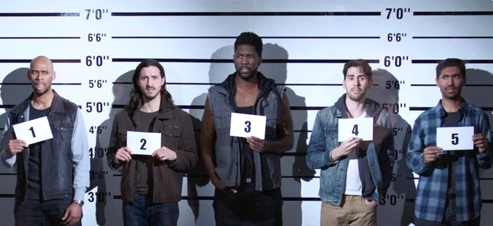
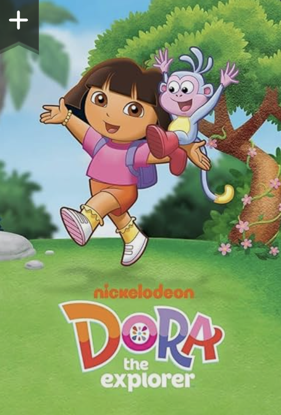

Human memory works like a computer in some respects, but differs critically in how stored data can be accidentally altered or damaged. Unlike a computer, which reproduces an error-free copy of stored information, human memory is reconstructive — we may feel our recall is perfectly accurate, yet cognitive psychologists have demonstrated that memories can be distorted by information encountered during and after encoding.
Additional information given after an event, called post-event information（事件后信息）, can produce "false memories（错误记忆）". A witness may confidently believe these false memories to be true. Loftus and Palmer (1974) showed this in a classic experiment: participants who watched a video of a car accident estimated faster speeds when asked how fast the cars were going when they "smashed into" each other versus when they "hit" each other.
Children as well as adults can serve as eyewitnesses. Sometimes a child may be the only witness to a crime, so the legal system must rely on their eyewitness testimony（目击者证词）. For this evidence to be useful, children need to be reliable witnesses — but are they?
Pozzulo et al. recognised that cognitive effects, such as those caused by post-event information (including the way questions are phrased), can produce errors in children's decision-making. Their earlier research (Pozzulo & Lindsay, 1997) showed that children were less likely than adults to say "I don't know" in response to a question, even when they knew this was a permissible option.
In a line-up（排队指认）, a witness is asked to identify the perpetrator from a selection of individuals (whether or not the culprit is actually present). However, this system can produce errors leading to miscarriages of justice. Pozzulo and Lindsay (1998) found that when the culprit is not among the people shown, children are more likely than adults to identify an innocent person — a false positive response（错误肯定反应）.

This study focused on social effects on child witnesses. Pozzulo et al. proposed several social factors that may lead children to make incorrect decisions:
The study aimed to test four predictions:
Social factors may exert a stronger influence on child witnesses than on adults. One eyewitness test（目击者测试） is identification of a suspect from a 'target-present' line-up（目标存在队列）, where the culprit is among the faces presented. Another test is the ability to correctly reject faces when the culprit is absent — a 'target-absent' line-up（目标缺失队列）.
To isolate social versus cognitive factors, Pozzulo et al. minimised cognitive demands by comparing performance on cartoon character（卡通人物） line-ups. Cartoon characters are familiar, so both children and adults should identify them with approximately 100% accuracy — a cognitively easy task requiring only matching an existing memory to visible faces. However, in a target-absent task, matching is impossible, forcing a selection. Faced with this harder task, children should rely more heavily on social factors and make more errors than adults.
This was a laboratory experiment（实验室实验）. Participants completed the task in a laboratory setting, whereas real line-ups take place in official venues such as police stations.
There were three independent variables（自变量 / IVs）:
| Independent Variable | Levels / Conditions | Design Type |
|---|---|---|
| Age（年龄）Young children (4–7 years) vs Adults (17–30 years) | Independent measures（独立测量设计） | |
| Line-up type（队列类型）Identification (target-present) vs Rejection (target-absent) | Repeated measures（重复测量设计） | |
| Cognitive demand / Target familiarity（认知负荷/目标熟悉度）Cartoon (familiar, low demand) vs Human (unfamiliar, high demand) | Repeated measures（重复测量设计） |
The dependent variable（因变量 / DV） was whether the participant identified the correct face (if present) or selected the blank silhouette (if absent). Children responded by pointing; adults recorded responses on paper.
| Group | N | Age Range | Mean Age | Gender | Recruitment Source |
|---|---|---|---|---|---|
| Children | 59 | 4–7 years | 4.98 years | 21 females, 38 males | Pre-kindergarten/kindergarten classes at 3 private schools in Eastern Ontario, Canada |
| Adults | 53 | 17–30 years | 20.54 years | 36 females, 17 males | Introductory Psychology Participant Pool at Eastern Ontario University |
All participants confirmed familiarity with the two cartoon targets: Dora the Explorer and Go, Diego, Go! See Figure 3.12 below.

Human face targets: Two Caucasian students were filmed for two types of stimulus material:
Cartoon face targets:
Cartoon videos were also 6-second colour clips without sound. Foil images were sourced from the internet and selected by three raters. All photos were in black and white to eliminate colour-based recognition cues.
Line-ups are used worldwide in legal cases. Procedures are highly controlled to minimise errors — e.g., ensuring photographs are uniform in size and all in colour or all in black and white. One unresolved issue: people are less accurate at identifying individuals of a different ethnic group from themselves. Researchers must therefore consider participant ethnicity and line-up member ethnicity as potential confounding variables.
For Children:
For Adults:
Key control features:
Controls and standardisation help improve validity. Working with a partner, list the ways the experimenters standardised the procedure. For each one, explain why it was important for validity.
Peer assessment: Swap lists with another pair and evaluate each other's explanations.
The researchers investigated two key differences: (1) between children's and adults' identification/rejection accuracy, and (2) between cartoon and human face performance within each age group.
The following tables present complete data for all conditions (corresponding to Table 1 and Table 2 in the original paper):
📋 Table 3.6a — Target-Present Line-ups: Identification Rates（正确识别率）
| Group （被试组） | Target Type （目标类型） | Target （具体目标） | Response Distribution (n) （反应分布） | ID Rate （识别率） | ||
|---|---|---|---|---|---|---|
| Selected Target （选目标） | Selected Foil （选干扰项） | False Rejection （误拒） | ||||
| Children （儿童） | Cartoon （卡通） | Dora | 1.00 (29) | 0 (0) | 0 (0) | 1.00 |
| Diego | 0.97 (28) | 0 (0) | 0.03 (1) | 0.97 | ||
| Human （真人） | Female | 0.24 (7) | 0.38 (11) | 0.38 (11) | 0.24 | |
| Male | 0.21 (6) | 0.45 (13) | 0.34 (10) | 0.21 | ||
| Adults （成人） | Cartoon （卡通） | Dora | 1.00 (25) | 0 (0) | 0 (0) | 1.00 |
| Diego | 0.89 (24) | 0 (0) | 0.11 (3) | 0.89 | ||
| Human （真人） | Female | 0.46 (13) | 0 (0) | 0.54 (15) | 0.46 | |
| Male | 0.85 (22) | 0.15 (4) | 0 (0) | 0.85 | ||
| 📊 Mean ID Rate（平均正确识别率） | Children: 0.99 (cartoon) / 0.23 (human) | Adults: 0.95 (cartoon) / 0.66 (human) | |||||
📋 Table 3.6b — Target-Absent Line-ups: Correct Rejection Rates（正确拒绝率）
| Group （被试组） | Target Type （目标类型） | Target （具体目标） | Response Distribution (n) （反应分布） | Rejection Rate （拒绝率） | |
|---|---|---|---|---|---|
| Correct Rejection （正确拒绝） | False ID （错误指认） | ||||
| Children （儿童） | Cartoon （卡通） | Dora | 0.80 (24) | 0.20 (6) | 0.80 |
| Diego | 0.67 (20) | 0.33 (10) | 0.67 | ||
| Human （真人） | Female | 0.47 (14) | 0.53 (16) | 0.47 | |
| Male | 0.43 (13) | 0.57 (17) | 0.43 | ||
| Adults （成人） | Cartoon （卡通） | Dora | 0.96 (27) | 0.04 (1) | 0.96 |
| Diego | 0.92 (24) | 0.08 (2) | 0.92 | ||
| Human （真人） | Female | 0.72 (18) | 0.28 (7) | 0.72 | |
| Male | 0.67 (18) | 0.33 (9) | 0.67 | ||
| 📊 Mean Rejection Rate（平均正确拒绝率） | Children: 0.74 (cartoon) / 0.45 (human) | Adults: 0.94 (cartoon) / 0.70 (human) | ||||
Table 3.6: Complete response data for children and adults in target-present and target-absent line-ups (Source: Pozzulo et al., 2011, Tables 1 & 2)
Figure 3.13: Mean identification and rejection rates for cartoon and human targets（卡通与人脸目标的平均识别率和正确拒绝率）
| Condition | Children | Adults | Statistical Test | Significant? |
|---|---|---|---|---|
| Cartoon faces | 0.99 (99%) | 0.95 (95%) | χ² = .39, p = .53 | No difference ✅ Pred. 1 supported |
| Human faces | 0.23 (23%) | 0.66 (66%) | χ² = 18.83, p = .001 | Adults better ✅ Pred. 2 supported |
| Condition | Children | Adults | Statistical Test | Significant? |
|---|---|---|---|---|
| Cartoon faces | 0.74 (74%) | 0.94 (94%) | χ² = 7.66, p = .01 | Adults better ✅ Pred. 3 supported |
| Human faces | 0.45 (45%) | 0.70 (70%) | χ² = 5.70, p = .02 | Adults better ✅ Pred. 4 supported |
| Line-up Type | Comparison | Conclusion | As Predicted? |
|---|---|---|---|
| Target-Present Identification |
Children: cartoons vs humans | Children significantly more accurate with cartoon faces | — |
| Adults: cartoons vs humans | Adults significantly more accurate with cartoon faces | — | |
| Children vs adults: cartoons | Similar accuracy for cartoon identification | Yes ✅ | |
| Children vs adults: humans | Children significantly less accurate than adults | Yes ✅ | |
| Target-Absent Rejection |
Children: cartoons vs humans | Children significantly more accurate at rejecting cartoon faces | — |
| Adults: cartoons vs humans | Adults significantly more accurate at rejecting cartoon faces | — | |
| Children vs adults: cartoons | Children significantly less accurate than adults | Yes ✅ | |
| Children vs adults: humans | Children significantly less accurate than adults | Yes ✅ |
Table 3.7: Results and conclusions for Pozzulo et al.'s four predictions（四项预测的结果和结论）
Based on the data in Table 3.6, choose a suitable graph to display the results. You may select just some of the data (e.g., only cartoon characters, or only human faces). Plot the results carefully, label both axes, include scales where relevant, and give your graph a title.
As predicted, children easily identified the correct face in target-present line-ups with cartoons, achieving nearly 100% accuracy — a ceiling effect（天花板效应）. Pozzulo et al. concluded that any errors in target-absent line-ups for cartoons must result from social factors rather than cognitive factors.
This cannot be explained by faulty memory for cartoon faces — children's memory was excellent. The most likely social factor driving children's lower correct rejection rate is the expectation that they should make a selection rather than a "non-selection" (correctly stating that the target is absent).
Furthermore, the similar pattern observed for human faces suggests that social demands also explain the difference between children and adults in rejection rates for human targets. Importantly, these effects of cognitive versus social demands are relative, not absolute: both identification and rejection tasks are influenced by both types of factors to some degree. The results simply suggest that for children, social factors play a larger role in decision-making during target-absent line-ups than during target-present ones.
Ethical considerations extend beyond participants to wider society. The findings contribute valuable evidence on child eyewitness reliability, potentially improving legal outcomes. However, benefits must be weighed against potential harm to participants.
The experimental situation was not crime-related（非犯罪相关） and children were not at risk. Parental/guardian consent was obtained, plus informed consent from children themselves in a child-friendly manner（儿童友好方式）. Children's comfort and right to withdraw were ensured, with ongoing monitoring of fatigue, anxiety, and stress.
This study has practical applications. Findings suggest strategies should minimise social demands influencing children's line-up responses, improving child witness reliability and court proceedings — particularly for crimes witnessed only by children or against child victims.
However, the evidence identifies the problem without offering solutions. Further research is needed to improve line-up procedures.
Practical solution — The Elimination Line-up: One procedure designed to reduce social demands is the elimination line-up（排除法队列） (Pozzulo & Lindsay, 1999). Children make two judgments:
The core finding — children's elevated false positive（错误肯定） rate in target-absent line-ups — can be understood through two levels of explanation:
From an individual-differences perspective, children's errors may stem from immature cognitive development:
Supporting evidence: Children's human-face identification rate (23%) far below adults' (66%) → genuine cognitive/individual differences exist
From a situational perspective, children's errors arise primarily from social pressure and situational demands:
Critical evidence: Children's target-present identification rate for cartoons: 99% (nearly perfect), yet target-absent correct rejection: only 74% (vs. adults 94%) → Memory is NOT the problem; the problem is social context!
The nature-nurture debate（先天vs后天辩论） asks whether behaviour is determined by genetic/biological factors (nature) or environmental/experiential factors (nurture). Pozzulo et al.'s study offers an interesting case.
Stronger evidence supports nurture, consistent with the study's conclusions:
As the authors acknowledge in their limitations, reality likely involves an interaction between nature and nurture: children's neurodevelopmental level (nature) determines their susceptibility to situational pressure, while specific socialisation experiences (nurture) shape how this susceptibility manifests in line-up contexts.
Unlike many psychology studies, Pozzulo et al. used 4–7 year-old children as participants, making this issue particularly salient.
In real forensic contexts, children are often the sole eyewitnesses (e.g., domestic violence, abuse, abduction cases). Adult-only research cannot generalise to child witnesses. Pozzulo et al. chose children because:
Pozzulo et al. demonstrated how to use children as research participants responsibly and effectively:
| Standard Adult Procedure | Child-Friendly Adaptation | Purpose |
|---|---|---|
| Written consent form | Parent/guardian consent + child verbal assent (age-appropriate language) | Respect child autonomy |
| Pen-and-paper responses | Pointing gestures + experimenter recording | Reduce literacy demands |
| Formal entry into experiment | Craft-making together first to build rapport | Reduce anxiety and stranger-anxiety |
| Uniform attire | Experimenters wore smart-casual clothing (no uniforms/formal wear) | Reduce authority-figure pressure |
| Standard debriefing | Crayons + colouring book as thank-you gift | End on a positive note |
| Fixed monitoring | Ongoing monitoring of fatigue, anxiety, stress signals | Protect child wellbeing proactively |
Pozzulo et al.'s methods provide an exemplary model for subsequent child-participant research: with appropriate procedural adjustments and psychological preparation, even young children can serve as reliable and effective research participants. This breaks the "adults-only" barrier, enabling developmental and applied cognitive research to accurately reflect different age groups.
Contrast: Baron-Cohen et al. (2001) used adult male participants and adult eyes photos. To test children's theory of mind (ToM), Baron-Cohen developed the age-appropriate "Sally-Anne test（莎莉-安妮测试）" — using puppet performances instead of eye photos, simpler language instead of complex emotion vocabulary. This illustrates how the same research question requires entirely different methodologies across age groups.
Pozzulo et al.'s study explored factors affecting children's accuracy as eyewitnesses when presented with a line-up. Adult and child participants were tested using a photoarray line-up that tested cognition (remembering and identifying the culprit when present) compared with a task influenced by social factors: a target-absent line-up where the task was rejection rather than identification.
In this situation a child can give a false positive response by incorrectly identifying an innocent person as the perpetrator. The researchers used both cartoon characters and humans as targets and foils. Results showed that children were as good as adults at identifying cartoon characters, but less able to correctly identify humans and less able to correctly reject either type of target. The tendency of children to choose an incorrect face (cartoon or human) in target-absent line-ups suggests these errors are due to social effects. They cannot be cognitive errors because children's memory for the faces was excellent (cartoon identification ≈100%). Therefore, the social demand of choosing a face when the target was absent must have caused the rejection errors.
Q7. Jaina is planning a study about false memories. She wants to compare false memories about emotional events and false memories about non-emotional events.
Q8. Shaun is piloting a photoarray line-up procedure which uses six faces.
© CIE Psychology — Cognitive Approach Core Study 3 | Generated from Cambridge International AS & A Level Psychology Coursebook